Básico → intermedio · Capítulo 04
Definir workflows
Describe qué operaciones ejecutar, en qué orden y con qué contratos, sin incorporar lógica de coordinación en tus módulos.
El workflow de saludo, de entrada a salida

El nodo limpiar obtiene /nombre; saludar recibe su salida y agrega el prefijo de config. El binding final construye el objeto con la propiedad saludo.
Anatomía del documento
| Campo | Función |
|---|---|
| format / schema_dialect | forge.workflow/2 y el dialecto JSON Schema 2020-12. |
| id / revision | Identidad semántica del workflow; una revisión no cambia de contenido. |
| input_schema / output_schema | Contrato de entrada y salida de la ejecución completa. |
| entry / nodes / edges | Nodo inicial, instrucciones y orden de ejecución dentro del cuerpo. |
| output | Binding que construye la respuesta final. |
| presentation | Metadata del editor conservada por el autor; el engine no la ejecuta. |
Cada operación fija id, contract e implementation. El motor no elige automáticamente la última revisión instalada.
Un workflow con dos pasos
Este documento recibe {"nombre":" Rafael "}. Primero limpia el nombre; después llama al módulo del capítulo anterior y devuelve un objeto.
{
"format": "forge.workflow/2",
"schema_dialect": "https://json-schema.org/draft/2020-12/schema",
"id": "manual.saludo",
"revision": "r1",
"input_schema": {
"type": "object",
"required": [
"nombre"
],
"properties": {
"nombre": {
"type": "string",
"maxLength": 128
}
},
"additionalProperties": false
},
"output_schema": {
"type": "object",
"required": [
"saludo"
],
"properties": {
"saludo": {
"type": "string",
"maxLength": 192
}
},
"additionalProperties": false
},
"entry": "limpiar",
"nodes": [
{
"id": "limpiar",
"kind": "operation",
"operation": {
"id": "forge.text.trim",
"contract": "1",
"implementation": "r1"
},
"config": {},
"input": {
"select": {
"source": "input",
"pointer": "/nombre"
}
}
},
{
"id": "saludar",
"kind": "operation",
"operation": {
"id": "manual.saludos.crear",
"contract": "1",
"implementation": "r1"
},
"config": {
"prefijo": "Hola, "
},
"input": {
"select": {
"source": "node",
"node": "limpiar",
"pointer": ""
}
}
}
],
"edges": [
{
"from": "limpiar",
"to": "saludar"
}
],
"output": {
"object": {
"saludo": {
"select": {
"source": "node",
"node": "saludar",
"pointer": ""
}
}
}
}
}La arista limpiar → saludar establece el orden. El binding de saludar.input selecciona el resultado de limpiar; la arista por sí sola no mueve datos.
Preparar no significa ejecutar
let definition: WorkflowDefinition = serde_json::from_slice(&bytes)?;
let plan = app.prepare(access.clone(), definition).await?;
// Reutilizar el mismo plan para otra entrada.
let request = StartRunRequest::new(plan.clone(), serde_json::json!({"nombre":" Ana "}));
let receipt = app.start(access.clone(), request).await?;Preparar resuelve operaciones y subworkflows, revisa el grafo, compila schemas y valida config/bindings. No llama al negocio. Un plan pertenece a esa composición; no se serializa ni se envía a otra instancia.
El input global se valida antes de aceptar. El input y output de cada operación se validan al ejecutarla; la salida global se valida antes de declarar éxito. Un análisis estático que no puede acreditar compatibilidad puede producir compatibility.unknown; no equivale a saltarse la validación de runtime.
Reglas del grafo
- Cada cuerpo tiene una cadena explícita desde su entry. No construyas forks o joins arbitrarios agregando varias aristas.
- Para rutas alternativas usa
decision; para concurrencia usaparalleloforeach; para repetir usaloop. Consulta flujos avanzados. - Los IDs de nodos son locales a su cuerpo. Un binding solo puede leer el input del ámbito y resultados de predecesores disponibles en ese mismo ámbito.
- No se permiten aristas que crucen cuerpos ni ciclos arbitrarios. Para reutilizar una definición registrada usa subworkflow.
Schemas útiles y limitados
Un contrato ayuda más si acota tipos, propiedades y tamaños. default en un schema no inserta valores y el motor no convierte "42" en 42. format es anotación en este perfil; una regla de negocio estricta necesita validación explícita.
{
"type": "object",
"required": ["pedido", "cantidad"],
"properties": {
"pedido": {"type": "string", "minLength": 1, "maxLength": 64},
"cantidad": {"type": "integer", "minimum": 1, "maximum": 1000}
},
"additionalProperties": false
}Las referencias $ref se resuelven en el paquete registrado, sin descargar URIs. Registra recursos con URI y revisión mediante register_schemas antes de build. El perfil acota expansión y evaluación, y no admite todas las construcciones posibles de 2020-12: por ejemplo $dynamicRef, anchors nombrados, $id anidados y referencias recursivas de schema se rechazan.
Para un editor, obtiene el catálogo con app.catalog(&access)?, conserva revisiones exactas y muestra los diagnósticos de prepare. El consumidor de autoría muestra el round-trip con metadata visual.